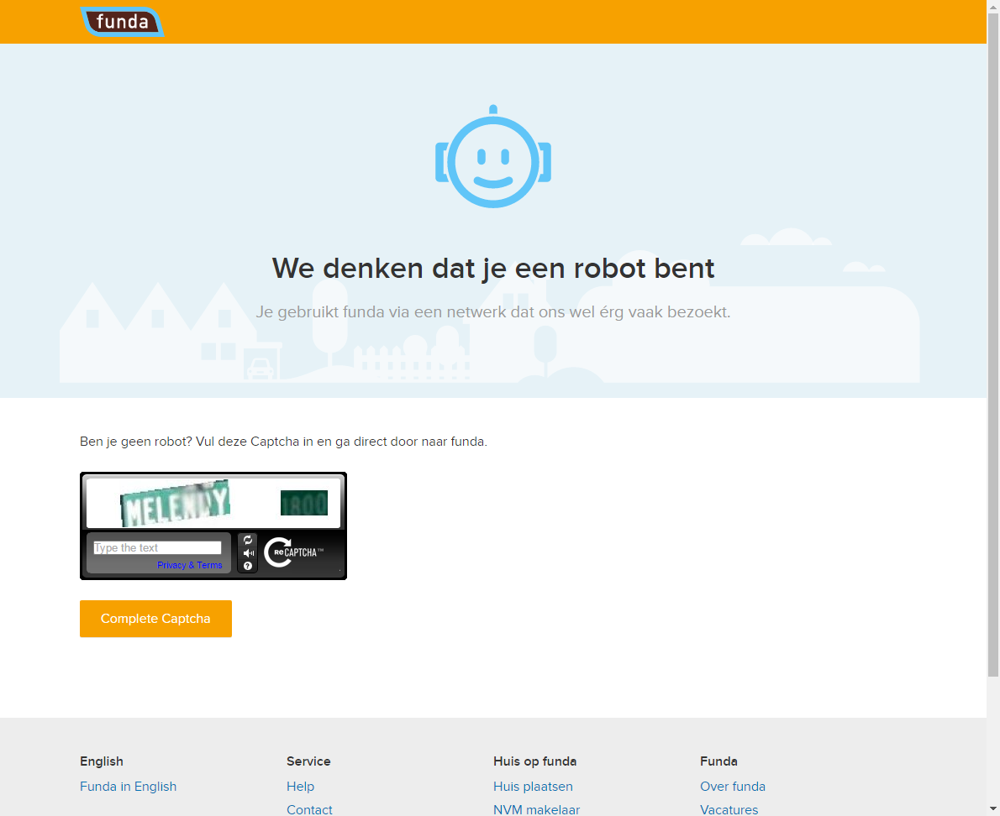

Website testing using BrowserTest
On this page we test whether we can find a nice house which is for sale in Utrecht, The Netherlands.
We check whether they have not been changing the original asking price or its size in square meters. Furthermore we look at, and capture, the first three pictures
To do this we use a Slim script table[?] driving the Java class BrowserTest (which uses Selenium).
This class allows us to specify what we want to do using a web browser, by the (end user visible) texts on screen. We don't need to specify any HTML code or write any custom Java logic. By only using the texts visible on screen we only need to change the script if the site's interaction design changes, but not for changes in HTML structure, element naming or styling.
The configuration of Selenium (i.e. which browser to use) and starting the browser session is done in the SuiteSetup[?]. Which allows this configuration to be shared between tests. Closing the browser is done in SuiteTearDown, which happens after all tests are completed.
| script | browser test | |||
| open | http://www.funda.nl | |||
| select | € 1.000.000 | for | Van | |
| select | € 2.000.000 | for | Tot | |
| enter | Wittevrouwensingel, Utrecht | as | Plaats, buurt, adres etc | |
| note | select option from autocomplete | |||
| wait | 1 | seconds | ||
| press | down | |||
| press | enter | |||
| click | Zoek | |||
| click | Wittevrouwensingel 66 | |||
| check | page title | Huis te koop: Wittevrouwensingel 66 3572 CC Utrecht [funda] | ||
| check | value of | Status | Beschikbaar | |
| check | value of | Woonoppervlakte | 323 m² | |
| note | set width so we see button to go to next photo | |||
| set browser width | 1200 | |||
| click | Foto's | |||
| show | take screenshot | Foto_1 |  | |
| click | Volgende foto | |||
| note | Wait for the loading of the next photo to complete | |||
| wait seconds | 1 | |||
| show | take screenshot | Foto_2 |  | |
| click | Volgende foto | |||
| wait seconds | 1 | |||
| show | take screenshot | Foto_3 |  | |
{kind=link}
When multiple similar sequences of steps are needed a script can be generalized using a scenario, which is show in ScenarioTest.
To make test more readable, maintainable and powerful we can also create custom subclasses of BrowserTest. This is shown in CustomFixtureTest.